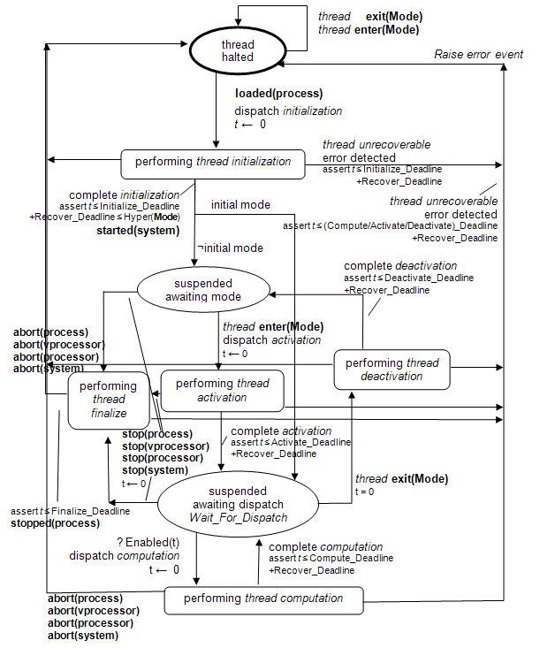
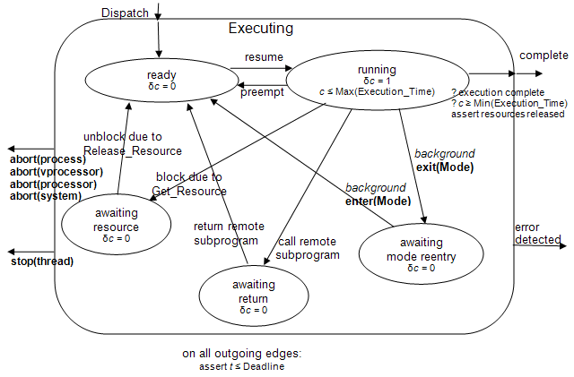
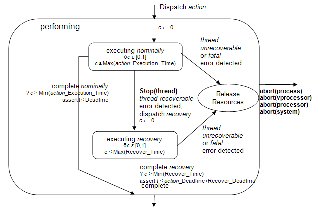

(1) A thread models a concurrent task or an active object, i.e., a schedulable unit that can execute concurrently with other threads. Each thread represents a sequential flow of control that executes instructions within a binary image produced from source text. One or more AADL threads may be implemented in a single operating system thread. A thread always executes within the virtual address space of a process, i.e., the binary images making up the virtual address space must be loaded before any thread can execute in that virtual address space. Threads are dispatched, i.e., their execution is initiated periodically by the clock or by the arrival of data or events on ports, or by arrival of subprogram calls from other threads.
(2) AADL supports an input-compute-output model of communication and execution for threads and port-based communication. The inputs received from other components are frozen at a specified point, by default the dispatch of a thread. As a result the computation performed by a thread is not affected by the arrival of new input until an explicit request for input, by default the next dispatch. Similarly, the output is made available to other components at a specified point in time, for data ports by default at completion time or thread deadline. In other words, AADL is able to support both synchronous execution and communication behavior, e.g., in the form of deterministic sampling of a control system data stream, as well as asynchronous concurrent processing.
(3) Systems modeled in AADL can have operational modes (see Section 12). A thread can be active in a particular mode and inactive in another mode. As a result a thread may transition between an active and inactive state as part of a mode switch. Only active threads can be dispatched and scheduled for execution. Threads can be dispatched periodically or as the result of explicitly modeled events that arrive at event ports, event data ports. Completion of the normal execution including error recovery will result in an event being delivered through the predeclared Complete event out port if it is connected.
(4) If the thread execution results in a fault that is detected, the source text may handle the error. If the error is not handled in the source text, the thread is requested to recover and prepare for the next dispatch. If an error is considered thread unrecoverable, its occurrence is reported through the predeclared Error out event data port.
Legality Rules
|
Category |
Type |
Implementation |
|
thread |
Features: · port · feature group · requires data access · provides subprogram access · requires subprogram access · provides subprogram group access · requires subprogram group access · feature Flow specifications: yes Modes: yes Properties: yes |
Subcomponents: · data · subprogram · subprogram group · abstract Subprogram calls: yes Connections: yes Flows: yes Modes: yes Properties: yes |
(L1) A thread type declaration can contain port, feature group, requires data access declarations, as well as requires and provides subprogram access declarations. It can also contain flow specifications, a modes subclause, and property associations.
(L2) A thread component implementation can contain abstract, data, subprogram, and subprogram group subcomponent declarations, a calls subclause, a flows subclause, a modes subclause, and thread property associations.
(L3) The Complete out event port, and Error out event data port are predeclared, i.e., are implicitly identifiers in the name space of a thread type. Therefore, there cannot be user-defined features with those names in threads.
(C3)At least one of the Compute_Entrypoint, Compute_Entrypoint_Source_Text or Compute_Entrypoint_Call_Sequence property must have a value that indicates the source code to execute after a thread has been dispatched when an implementation is to be generated or consistency with source code is to be checked. Other entrypoint properties are optional, i.e., if a property value is not defined, then the entrypoint is not called.
(C4)The Period property must have a value if the Dispatch_Protocol property value is periodic, sporadic, timed, or hybrid.
Standard Properties
-- Properties related to source textSource_Text: inherit list of aadlstring
Source_Language: inherit list of Supported_Source_Languages -- Properties specifying memory requirements of threadsSource_Code_Size: SizeSource_Data_Size: SizeSource_Stack_Size: SizeSource_Heap_Size: Size
-- Properties specifying thread dispatch properties
Dispatch_Protocol: Supported_Dispatch_Protocols
Dispatch_Trigger: list of reference (port)
Dispatch_Able: aadlboolean
Dispatch_Offset: inherit Time
First_Dispatch_Time : inherit Time
Period: inherit Time
-- the default value of the deadline is that of the period
Deadline: inherit Time => Period
-- Scheduling properties
Priority: inherit aadlinteger
POSIX_Scheduling_Policy : enumeration (SCHED_FIFO, SCHED_RR, SCHED_OTHERS)
Criticality: aadlinteger
Time_Slot: list of aadlinteger
-- Properties specifying execution entrypoints and timing constraints
Initialize_Execution_Time: Time_Range
Initialize_Deadline: Time
Initialize_Entrypoint: classifier ( subprogram classifier )
Initialize_Entrypoint_Call_Sequence: reference ( subprogram call sequence )
Initialize_Entrypoint_Source_Text: aadlstring
Compute_Execution_Time: Time_Range
Compute_Deadline: Time
Compute_Entrypoint: classifier ( subprogram classifier )Compute_Entrypoint_Call_Sequence: reference ( subprogram call sequence )
Compute_Entrypoint_Source_Text: aadlstring
Activate_Execution_Time: Time_Range
Activate_Deadline: Time
Activate_Entrypoint: classifier ( subprogram classifier )Activate_Entrypoint_Call_Sequence: reference ( subprogram call sequence )
Activate_Entrypoint_Source_Text: aadlstring
Deactivate_Execution_Time: Time_Range
Deactivate_Deadline: Time
Deactivate_Entrypoint: classifier ( subprogram classifier )
Deactivate_Entrypoint_Call_Sequence: reference ( subprogram call sequence )
Deactivate_Entrypoint_Source_Text: aadlstring
Recover_Execution_Time: Time_Range
Recover_Deadline: Time
Recover_Entrypoint: classifier ( subprogram classifier )
Recover_Entrypoint_Call_Sequence: reference ( subprogram call sequence )
Recover_Entrypoint_Source_Text: aadlstring
Finalize_Execution_Time: Time_Range
Finalize_Deadline: Time
Finalize_Entrypoint: classifier ( subprogram classifier )
Finalize_Entrypoint_Call_Sequence: reference ( subprogram call sequence )
Finalize_Entrypoint_Source_Text: aadlstring
Reference_Processor: inherit classifier ( processor )
-- mode to enter as result of activationResumption_Policy: enumeration ( restart, resume )
-- Properties specifying constraints for processor and memory bindingAllowed_Processor_Binding_Class:
inherit list of classifier (processor, virtual processor, system)
Allowed_Processor_Binding: inherit list of reference (processor, virtual processor, system)
Allowed_Memory_Binding_Class:
inherit list of classifier (memory, system, processor)
Allowed_Connection_Binding_Class:
inherit list of classifier(processor, virtual processor, bus, virtual bus, device, memory)
Allowed_Connection_Binding: inherit list of reference (processor, virtual processor, bus, virtual bus, device, memory)
Not_Collocated: record (
Targets: list of reference (data, thread, process, system, connection);
Location: classifier ( processor, memory, bus, system ); )
Collocated: record (
Targets: list of reference (data, thread, process, system, connection);
Location: classifier ( processor, memory, bus, system ); )
-- Binding value filled in by binding toolActual_Processor_Binding: inherit list of reference (processor, virtual processor)
Actual_Memory_Binding: inherit list of reference (memory)
Actual_Connection_Binding: inherit list of reference (processor, virtual processor, bus, virtual bus, device, memory)
-- property indicating whether the thread affects the hyperperiod -- for mode switchingSynchronized_Component: inherit aadlboolean => true
-- property specifying the action for executing thread at actual mode switchActive_Thread_Handling_Protocol:
inherit Supported_Active_Thread_Handling_Protocols => abort
Active_Thread_Queue_Handling_Protocol:
inherit enumeration (flush, hold) => flush
NOTE: Entrypoints for thread execution can be specified in three ways: by identifying source text name, by identifying a subprogram classifier representing the source text, or by a call sequence.
Compute_Entrypoint => classifier ( ControlAlgorithm.basic );
Compute_Entrypoint_Call_Sequence => reference ( callseq1 );
Compute_Entrypoint_Source_Text => “MyControlAlgorithm”;
Semantics
(5) Thread semantics are described in terms of thread states, thread dispatching, thread scheduling and execution, and fault handling. Thread execution semantics apply once the appropriate binary images have been loaded into the respective virtual address space (see Section 5.6).
(6) Threads are dispatched periodically or by the arrival of data and events, or by arrival of subprogram calls from other threads. Subprogram calls always trigger dispatches. Subsets of ports can be specified to trigger dispatches. By default, any one of the incoming event ports and event data ports triggers a dispatch. The Dispatch_Trigger property can specify different subsets of ports, including data ports (see Section 5.4.2) as a disjunction or the Behavior Annex (see Section Annex Document D) can be used to specify additional logical conditions on thread dispatch triggering.
(7) Port input is frozen at dispatch time or a specified time during thread execution and made available to the thread for access in the form of a port variable (see Section 8.3). From that point on its content is not affected by new arrival of data and event for the remainder of the current execution. This assures a input-compute-output model of execution. By default, input of ports is frozen for all ports that are not candidates for thread dispatch triggering; for dispatch trigger candidates, only those port(s) actually triggering a specific dispatch is frozen. Whether input of specific ports is frozen at a dispatch and the time at which it is frozen can be explicitly specified (see Section 8.3.2).
(8) Threads may be part of modes of containing components. In that case a thread is active, i.e., eligible for dispatch and scheduling, only if the thread is part of the current mode (see Sections 5.4.1 and 13.6).
(9) Threads can contain mode subclauses that define thread-internal operational modes. Threads can have property values that are different for different thread-internal modes (see Section 5.4.5).
(10) Every thread has a predeclared out event port named Complete. If this port is connected, i.e., named as the source in a connection declaration, then an event is raised implicitly on this port when nominal execution including recovery of a thread dispatch completes.
(11) Every thread has a predeclared out event data port named Error. If this port is connected, i.e., named as the source in a connection declaration, then an event is raised implicitly on this port when a thread unrecoverable error is detected (see Section 5.4.4 for more detail). This supports the propagation of thread unrecoverable errors as event data for fault handling by a thread.
(12) Threads may contain subprogram subcomponents that can be called from within the thread, and also by other threads if it is made accessible through a provides subprogram access declaration. Similarly, a thread can contain a subprogram group declaration, which represents an instance of a subprogram library dedicated to the thread. The subprograms within the subprogram library can be called from within the thread or by other threads if it is made accessible through a provides subprogram group access declaration. For further details about calling subprograms see Section 5.2. Finally, a thread can contain data subcomponents. They represent static data owned by the thread, i.e., state that is preserved between thread dispatches. The thread has exclusive access to this data component unless it specifies it to be accessible through a provides data access declaration.
(13) A thread executes a code sequence in the associated source text when dispatched and scheduled to execute. This code sequence is part of a binary image accessible in the virtual address space of the containing process. It is assumed that the process is bound to the memory that contains the binary image (see Section 5.6).
(14) A thread goes through several states. Thread state transitions under normal operation are described here and illustrated in Figure 5. Thread state transitions under fault conditions are described in Section 5.4.4
(15) The initial state is thread halted. When the loading of the virtual address space as declared by the enclosing process completes (see Section 5.6), a thread is initialized by performing an initialization code sequence in the source text. Once initialization is completed the thread enters the suspended awaiting dispatch state if the thread is part of the initial mode, otherwise it enters the suspended awaiting mode state. When a thread is in the suspended awaiting mode state it cannot be dispatched for execution.
(16) A thread may be declared to have modes. In this case, each mode represents a behavioral state within the execution of the thread. When a thread is dispatched it is assumed to execute in a specific mode. It may resume execution in the behavioral state (mode) in which it completed its previous dispatch execution, e.g., state reflected in a static data component, or it may execute in a specific mode based on the input received at dispatch time. A modal thread can have mode-specific property values. For example, a thread can have different worst-case execution times for different modes, each representing a different execution path through the source code. The result is a model that more accurately reflects the actual system behavior. The Behavior Model Annex Document D allows for a refined specification of thread behavior, e.g., it may explicitly specify the conditions under which the thread executes in one mode or another mode and it can represent intermediate behavioral states.
(17) When a mode transition is initiated, a thread that is part of the old mode and not part of the new mode exits the mode by transitioning to the suspended awaiting mode state after performing thread deactivation during the mode change in progress system state (see Figure 23). If the thread is periodic and its Synchronized_Component property is true, then its period is taken into consideration to determine the actual mode transition time (see Sections 12 and 13.6 for detailed timing semantics of a mode transition). If an aperiodic or a sporadic thread is executing a dispatch when the mode transition is initiated, its execution is handled according to the Active_Thread_Handling_Protocol property. The execution of a background thread is suspended through deactivation while the thread is not part of the new mode. A thread that is not part of the old mode and part of the new mode enters the mode by transitioning to the suspended awaiting dispatch state after performing thread activation.
(18) When in the suspended awaiting dispatch state, a thread is awaiting a dispatch request for performing the execution of a compute source text code sequence as specified by the Compute_Entrypoint property on the thread or on the event or event data port that triggers the dispatch. When a dispatch request is received for a thread, data, event information, and event data is made available to the thread through its port variables (see Sections 8.2 and 9.1). The thread is then handed to the scheduler to perform the computation. Upon successful completion of the computation, the thread returns to the suspended awaiting dispatch state. If a dispatch request is received for a thread while the thread is in the compute state, this dispatch request is handled according to the specified Overflow_Handling_Protocol for the event or event data port of the thread.
(19) A thread may enter the thread halted state, i.e., will not be available for future dispatches and will not be included in future mode switches. If re-initialization is requested for a thread in the thread halted state (see Section 5.6), then its virtual address space is reloaded, the processor to which the thread is bound is restarted, or the system instance is restarted.
(20) A thread may be requested to enter its thread halted state through a stop request after completing the execution of a dispatch or while not part of the active mode. In this case, the thread may execute a finalize entrypoint before entering the thread halted state. A thread may also enter the thread halted state immediately through an abort request. Any resources locked by Get_Resource are released (see Figure 5).
(21) Figure 5 presents the top-level hybrid automaton (using the notation defined in Section 1.6) to describe the dynamic semantics of a thread from the perspective of a scheduler. The hybrid automaton states complement the application modes declared for threads. Figure 7 elaborates the performing thread computation state of Figure 5. Figure 6 elaborates the executing nominally substate of Figure 7. The bold faced edge labels in Figure 5 indicate that the transitions marked by the label are coordinated across multiple hybrid automata. The scope of the labels is indicated in parentheses, i.e., interaction with the process hybrid automaton (Figure 8), with the system hybrid automaton (Figure 22) and with system wide mode switching (see Figure 23). Thread initialization is only started when the process containing the thread has been loaded as indicated by the label loaded(process). The label started(system) is coordinated with other threads and the system hybrid automaton to transition to System operational only after threads have been initialized. In some systems it is desirable to initialize all threads, while in other system it is acceptable for threads to be created and initialized more dynamically, possibly even at activation and deactivation.
(22) The hybrid automata contain assertions. In a time-partitioned system these assertions will be satisfied. In other systems they will be treated as anomalous behavior.
(23) For each of the states representing a performing thread action such as initialize, compute, recover, activate, deactivate, and finalize, an execution entrypoint to a code sequence in the source text can be specified. Each entrypoint may refer to a different source text code sequence which contains the entrypoint, or all entrypoints of a thread may be contained in the same source text code sequence. In the latter case, the source text code sequence can determine the context of the execution through a Dispatch_Status runtime service call (see Section 5.4.8). The execution semantics for these entrypoints is described in Section 5.4.3.
(24) An Initialize_Entrypoint (enter the state performing thread initialization in Figure 5) is executed during system initialization and allows threads to perform application specific initialization, such as ensuring the correct initial value of its out and in out ports. A thread that has halted may be re-initialized.
(25) The Activate_Entrypoint (enter the state performing thread activation in Figure 5) and Deactivate_Entrypoint (enter the state performing thread activation in Figure 5) are executed during mode transitions and allow threads to take user-specified actions to save and restore application state for continued execution between mode switches. These entrypoints may be used to reinitialize application state due to a mode transition. Activate entrypoints can also ensure that out and in out ports contain correct values for operation in the new mode.
(26) The Compute_Entrypoint (enter state performing thread computation in Figure 5) represents the code sequence to be executed on every thread dispatch. Each provides subprogram access feature represents a separate compute entrypoint of the thread. Remote subprogram calls are thread dispatches to the respective entrypoint. Event ports and event data ports can have port specific compute entrypoints to be executed when the corresponding event or event data dispatches a thread.
(27) A Recover_Entrypoint (enter the state executing recovery in Figure 7) is executed when a fault in the execution of a thread requires recovery activity to continue execution. This entrypoint allows the thread to perform fault recovery actions (for a detailed description see Section 5.4.4).
(28) A Finalize_Entrypoint (enter the state performing thread finalize in Figure 5) is executed when a thread is asked to terminate as part of a process unload or process stop.
(29) If no value is specified for any of the entrypoints, then there is no invocation at all.

Figure 5 Thread States and Actions
(30) Threads are dispatched periodically determined by a clock or by the arrival of events, event data, of calls to provides subprogram access. By default any event port or event data port can trigger a dispatch. In that case, only the input of the port triggering the dispatch and any data port is available to the application program.
(31) A thread may have a Dispatch_Trigger property to specify a subset of event, data, or event data ports that can trigger a thread dispatch. In this case, arrival of events or event data on any of the listed ports can trigger the dispatch.
(32) The default disjunction of ports triggering a dispatch can be overwritten by a logical condition on the ports expressed by a annex subclauses of the Behavior Annex notation (see Annex Document D).
(33) For periodic threads arrival of events or event data will not result in a dispatch. Events and event data are queued in their incoming port and are accessible to the application code of the thread. Periodic thread dispatches are solely determined by the clock according to the time interval specified through the Period property value.
(34) The Dispatch_Protocol property of a thread determines the characteristics of dispatch requests to the thread. This is modeled in the hybrid automaton in Figure 5 by the Enabled(t) function as the Wait_For_Dispatch invariant. The Enabled function determines when a transition from Wait_For_Dispatch to performing thread computation will occur. The Wait_For_Dispatch invariant captures the condition under which the Enabled function is evaluated. The consequence of a dispatch is the execution of the entrypoint source text code sequence at its current execution position. This position is set to the first step in the code sequence and reset upon completion (see Section 5.4.3).
(35) For a thread whose dispatch protocol is periodic, a dispatch request is issued at time intervals of the specified Period property value. The Enabled function is t = Period. The Wait_For_Dispatch invariant is t £ Period Ù δt = 1. The dispatch occurs at t = Period. The Compute_Entrypoint of the thread is called.
(36) Periodic threads can have a Dispatch_Offset property value. In this case the dispatch time is offset from the period by the specified amount. This allows two periodic threads with the same period to be aligned, where the first thread has a pre-period deadline, and the second thread has a dispatch offset greater than the deadline of the first thread. This is a static alignment of thread execution order within a frame, while the immediate data connection achieves the same by dynamically aligning completion time of the first thread and the start of execution of the second thread (see Section 9.2.5).
(37) For threads whose dispatch protocol is aperiodic, sporadic, timed, or hybrid, a dispatch request is the result of an event or event data arriving at an event or event data port of the thread, or a remote subprogram call arriving at a provides subprogram access feature of the thread. This dispatch trigger condition is determined as follows:
· Arrival of an event or event data on any incoming event, or event data port, or arrival of any subprogram call request on a provides subprogram access feature. In other words, it is a disjunction of all incoming features.
· By arrival on a subset of incoming features (port, subprogram access). This subset can be specified through the Dispatch_Trigger value of the thread.
· By a user-defined logical condition on the incoming features that can trigger the dispatch expressed through an annex subclause expressed in the Behavior Annex sublanguage notation (see Annex Document D).
(38) For a thread whose dispatch protocol is aperiodic, a dispatch request is the result of an event or event data arriving at an event or event data port of the thread, or a remote subprogram call arriving at a provides subprogram access feature of the thread. There is no constraint on the inter-arrival time of events, event data or remote subprogram calls. The dispatch actually occurs immediately when a dispatch request arrives in the form of an event at an event port with an empty queue, or if an event is already queued when a dispatch execution completes, or a remote subprogram call arrives. The Enabled function by default has the value true if there exists a port or provides subprogram access (p) in the set of features that can trigger a dispatch (E) with a non-empty queue, i.e., $ p in E: p ≠ Æ. This evaluation function may be redefined by the Behavior Annex (see Annex Document D). The Wait_For_Dispatch invariant is that no event, event data, or subprogram call is queued, i.e., " p in E: p = Æ. The Compute_Entrypoint of the port triggering the dispatch, or if not present that of the thread, is called.
(39) If multiple ports are involved in triggering the dispatch the Compute_Entrypoint of the thread is called. The list of ports actually satisfying the dispatch trigger condition that results in the dispatch is available to the source text as output parameter of the Await_Dispatch service call (see Section 5.4.8).
(40) For a thread whose dispatch protocol is sporadic, a dispatch request is the result of an event or event data arriving at an event or event data port of the thread, or a remote subprogram call arriving at a provides subprogram access feature of the thread. The time interval between successive dispatch requests will never be less than the associated Period property value. The Enabled function is t ≥ PeriodÙ$ p in E: p ≠ Æ. The Wait_For_Dispatch invariant is t < Period Ú (t > Period Ù " p in E: p = Æ). The dispatch actually occurs when the time condition on the dispatch transition is true and a dispatch request arrives in the form of an event at an event port with an empty queue, or an event is already queued when the time condition becomes true, or a remote subprogram call arrives when the time condition is true. The Compute_Entrypoint of the port triggering the dispatch, or if not present that of the thread, is called.
(41) For a thread whose dispatch protocol is timed, a dispatch request is the result of an event, event data, or remote subprogram arrival, or it occurs by an amount of time specified by the Period property since the last dispatch.. In other words, the Period represents a time-out value that ensure a dispatch occurs after a given amount of time if no events, event data, or remote subprogram calls have arrived or are queued. The Enabled function by default has the value true if there exists a port or provides subprogram access (p) in the set of features that can trigger a dispatch (E) with an event, event data, or call in its queue, or time equal to the Period has expired since the last dispatch, i.e., $ p in E: p ≠Æ Ú t = Period. t is reset to zero at each dispatch. This evaluation function may be redefined by the Behavior Annex (see Annex Document D). The Wait_For_Dispatch invariant is that no event, event data, or call is queued, i.e., " p in E: p = Æ Ù t < Period. The Compute_Entrypoint of the port triggering the dispatch, or if not present that of the thread, is called. If a timeout occurs, i.e., the dispatch is triggered at the end of the period, the Recover_Entrypoint is called.
(42) A thread whose dispatch protocol is hybrid, combines both aperiodic and periodic dispatch behavior in the same thread. A dispatch request is the result of an event, event data, or remote subprogram call arrival, as well as periodic dispatch requests at a time interval specified by the Period property value. The Enabled function is t = Period Ú $ p in E: p ≠ Æ. t is reset to zero at each periodic dispatch. The evaluation function for events, event data, or subprogram calls may be redefined by the Behavior Annex. The Wait_For_Dispatch invariant is that no event, event data, call, or periodic dispatch is queued and the period has not expired, i.e., " p in E: p = Æ Ù t £ Period. The Compute_Entrypoint of the port triggering the dispatch, or if not present that of the thread, is called.
(43) If several events or event data occur logically simultaneously and are routed to the same port of an aperiodic, sporadic, timed, or hybrid thread, the order of arrival for the purpose of event handling according the above rules is implementation-dependent. If several events or event data occur logically simultaneously and are routed to the different ports of the same aperiodic, sporadic, timed, or hybrid thread, the order of event handling is determined by the Urgency property associated with the ports.
(44) For a thread whose dispatch protocol is background, the thread is dispatched upon completion of its initialization entrypoint execution the first time it is active in a mode. The Enabled function is true. The Wait_For_Dispatch invariant is t = 0. The dispatch occurs immediately. If the Dispatch_Trigger property is set, then its execution is initiated through the arrival of an event or event data on one of those ports. In that case, the Enabled function is true for any Dispatch port p ∈ Dispatch_Trigger : p ≠ Æ.
(45) The different dispatch protocols can be summarized as follows:
|
Dispatch protocol |
Dispatch condition |
|
Periodic |
Every period triggered by the dispatcher of the runtime system |
|
Aperiodic |
Triggered by the arrival of events, event data, subprogram calls |
|
Sporadic |
Triggered by the arrival of events, event data, subprogram calls with a minimum time difference of the specified period between dispatches |
|
Timed |
Triggered by the arrival of events, event data, subprogram calls with a timeout at the specified period. |
|
Hybrid |
Triggered by the arrival of events, event data, subprogram calls, as well as every period triggered by the dispatcher. |
(46) Note that background threads do not have their current execution position reset on a mode switch. In other words, the background thread will resume execution from where it was previously suspended due to a mode switch.
(47) Note that background threads are suspended when not active in the current mode. If they have access to shared data components, they may have locked the resource at the time of suspension and potentially cause deadlock if active threads also share access to the same data component.
(48) A background thread is scheduled to execute such that all other threads’ timing requirements are met. If more than one background thread is dispatched, the processor’s scheduling protocol determines how such background threads are scheduled. For example, a FIFO protocol for background threads means that one background thread at a time is executed, while fair share means that all background threads will make progress in their execution.
(49) The Overflow_Handling_Protocol property for event or event data ports specifies the action to take when events arrive too frequently. These events are ignored, queued, or are treated as an error. The error treatment causes the currently active dispatch to be aborted, allowing it to clean up through the Recover_Entrypoint and then be redispatched. For more details on port queuing see section 8.3.3.
Examples
thread Prime_Reporter
features
Received_Prime : in event data port Base_Types::Integer;
properties
Dispatch_Protocol => Timed;
end Prime_Reporter;
thread Prime_Reporter_One extends Prime_Reporter
features
Received_Prime : refined to in event data port Base_Types::Integer
{Compute_Entrypoint_Source_Text => "Primes.On_Received_Prime_One";};-- function called on message-based dispatch
properties
Period => 9 Sec; -- timeout period
Priority => 45;
Compute_Entrypoint_Source_Text => "Primes.Report_One";
-- function called in case of timeout
end Prime_Reporter_One;
(50) When a thread action is performing thread computation (see Figure 5), the execution of the thread’s entrypoint source text code sequence is managed by a scheduler. This scheduler coordinates all thread executions on one processor as well as concurrent access to shared resources. While performing the execution of an entrypoint the thread can be executing nominally or executing recovery (see Figure 7). While executing an entrypoint a thread can be in one of five substates: ready, running, awaiting resource, awaiting return, and awaiting resume (see Figure 6).
(51) A thread initially enters the ready state. A scheduler selects one thread from the set of threads in the ready state to run on one processor according to a specified scheduling protocol. It ensures that only one thread is in the running state on a particular processor. If no thread is in the ready state, the processor is idle until a thread enters the ready state. A thread will remain in the running state until it completes execution of the dispatch, until a thread entering the ready state preempts it if the specified scheduling protocol prescribes preemption, until it blocks on a shared resource, or until an error occurs. In the case of completion, the thread transitions to the suspended awaiting dispatch state, ready to service another dispatch request. In the case of preemption, the thread returns to the ready state. In the case of resource blocking, it transitions to the awaiting resource state.
(52) Shared data is accessed in a critical region. Resource blocking can occur when a thread attempts enter a critical region while another thread is already in this critical region. In this case the thread enters the Awaiting resource state. A Concurrency_Control_Protocol property value associated with the shared data component determines the particular concurrency control mechanism to be used (see Section 5.1). The Get_Resource and Release_Resource service calls are provided to indicate the entry and exit of critical regions (see Section 5.1.1). When a thread completes execution it is assumed that all critical regions have been exited, i.e., access control to shared data has been released. Otherwise, the execution of the thread is considered erroneous.
(53) Subprogram calls to remote subprograms are synchronous or semi-synchronous. In the synchronous case, a thread in the running state enters the awaiting return state when performing a call to a subprogram whose service is performed by a subprogram in another thread. The service request for the execution of the subprogram is transferred to the remote subprogram request queue of a thread as specified by the Actual_Subprogram_Call property that specifies the binding of the subprogram call to a subprogram in another thread. When the thread executing the corresponding remote subprogram completes and the result is available to the caller, the thread with the calling subprogram transitions to the ready state. In the semi-synchronous case, the calling thread continues to execute concurrently until it awaits the result of the call (see service call Await_Result in Section 5.4.8).
(54) A background thread may be temporarily suspended by a mode switch in which the thread is not part of the new mode, as indicated by the exit(Mode) in Figure 6. In this case, the thread transitions to the awaiting mode_entry state. If the thread was in a critical region, it will be suspended once it releases all resources on exit of the critical region. A background thread resumes execution when it becomes part of the current mode again in a later mode switch. It then transitions from the awaiting_mode_entry state into the ready state.
(55) Execution of any of these entrypoints is characterized by actual execution time (c) and by elapsed time (t). Actual execution time is the time accumulating while a thread actually runs on a processor. Elapsed time is the time accumulating as real time since the arrival of the dispatch request. Accumulation of time for c and t is indicated by their first derivatives dc and dt. A derivative value of 1 indicates time accumulation and a value of 0 indicates no accumulation. Figure 6 shows the derivative values for each of the scheduling states. A thread accumulates actual execution time only while it is in the running state. The processor time, if any, required to switch a thread between the running state and any of the other states, which is specified in the Thread_Swap_Execution_Time property of the processor, is not accounted for in the Compute_Execution_Time property, but must be accounted for by an analysis tool.
(56) The execution time and elapsed time for each of the entrypoints are constrained by the entrypoint-specific <entrypoint>_Execution_Time and entrypoint-specific <entrypoint>_Deadline properties specified for the thread. If no entrypoint specific execution time or deadline is specified, those of the containing thread apply. There are three timing constraints:
· Actual execution time, c, will not exceed the maximum entrypoint-specific execution time.
· Upon execution completion the actual execution time, c, will have reached at least the minimum entrypoint-specific execution time.
· Elapsed time, t, will not exceed the entrypoint-specific deadline.
Dispatch Dispatch Dispatch Dispatch Dispatch Dispatch Dispatch Dispatch Dispatch Dispatch Dispatch Dispatch

Figure 6 Thread Scheduling and Execution States
(57) Execution of a thread is considered anomalous when the timing constraints are violated. Each timing constraint may be enforced and reported as an error at the time, or it may be detected after the violation has occurred and reported at that time. The implementor of a runtime system must document how it handles timing constraints.
(58) A fault is defined to be an anomalous undesired change in thread execution behavior, possibly resulting from an anomalous undesired change in data being accessed by that thread or from violation of a compute time or deadline constraint. An error is a fault that is detected during the execution of a thread. Detectable errors are classified as thread recoverable errors, or thread unrecoverable errors.
(59) A thread recoverable error may be handled as part of normal execution by that thread, e.g., by exception handlers programmed in the source text of the application. The exception handler may propagate the error to an external handler by sending an event or event data through a port.
(60) If the thread recoverable error is not handled by the application, the thread affected by the error is given a chance to recover through the invocation of the thread’s recover entrypoint. The recover entrypoint source text sequence has the opportunity to update the thread’s application state. The recover entrypoint is assumed to have access to an error code through a runtime service call Get_Error_Code. The recover entrypoint may report the fact that it performed recovery through a user–defined port. Upon completion of the recover entrypoint execution, the performance of the thread’s dispatch is considered complete. In the case of performing thread computation, this means that the thread transitions to the suspended await dispatch state (see Figure 5), ready to perform additional dispatches. Concurrency control on any shared resources must be released. If the recover entrypoint is unable to recover the error becomes a thread unrecoverable error. This thread-level fault handling in terms of thread scheduling states is illustrated in Figure 7.
(61) A thread recoverable error may occur during the execution of a remote subprogram call. In this case, the thread servicing the remote call is given a chance to recover as well as the thread that made the call.
(62) In the presence of a thread recoverable error, the maximum interval of time between the dispatch of a thread and its returning to the suspended awaiting dispatch state is the sum of the thread’s compute deadline and its recover deadline. The maximum execution time consumed is the sum of the compute execution time and the recover execution time. In the case when an error is encountered during recovery, the same numbers apply.
(63) Thread unrecoverable errors are reported as event data through the Error port of the thread, where they can be communicated to a separate error handling thread for further analysis and recovery actions.
(64) A thread unrecoverable error causes the execution of a thread to be terminated prematurely without undergoing recovery. The thread unrecoverable error is reported as an error event through the predeclared Error event data port, if that port is connected. If this implicit error port is not connected, the error is not propagated and other parts of the system will have to recognize the fault through their own observations. In the case of a thread unrecoverable error, the maximum interval between the dispatch of the thread and its returning to the suspended awaiting dispatch state is the compute deadline, and the maximum execution time consumed is the compute execution time.
(65) For errors detected by the runtime system, error details are recorded in the data portion of the event as specified by the implementation. For errors detected by the source text, the application can choose its encoding of error detail and can raise an event in the source text. If the propagated error will be used to directly dispatch another thread or trigger a mode change, only an event needs to be raised. If the recovery action requires interpretation external to the raising thread, then an event with data must be raised. The receiving thread that is triggered by the event with data can interpret the error data portion and raise events that trigger the intended mode transition.

Figure 7 Performing Thread Execution with Recovery
(66) A timing fault during initialize, compute, activation, and deactivation entrypoint executions is considered to be a thread recoverable error. A timing fault during recover entrypoint execution is considered to be a thread unrecoverable error.
(67) If any error is encountered while a thread is executing a recover entrypoint, it is treated as a thread unrecoverable error. In other words, an error during recovery must not cause the thread to recursively re-enter the executing recovery state.
(68) If a fault is encountered by the application itself, it may explicitly raise an error through a Raise_Error service call on the Error port with the error class as parameter. This service call may be performed in the source text of any entrypoint. In the case of recover entrypoints, the error class must be thread unrecoverable.
(69) Faults may also occur in the execution platform. They may be detected by the execution platform components themselves and reported through an event or event data port, as defined by the execution platform component. They may go undetected until an application component such as a health monitoring thread detects missing health pulse events, or a periodic thread detects missing input. Once detected, such errors can be handled locally or reported as event data.
(70) A thread can have modes declared inside its type or implementation. They represent thread-internal execution paths and allow mode-specific property values to be associated with the thread. For example, the thread can have different execution times under different modes. Application source text (programming code) actually executes branch and merge points in various places of its code sequence and branches based on state values or based on input. In terms of the mode abstraction this means that the (mode) state at time of dispatch may affect the branch condition, the input to the thread execution may affect the branch condition, or a combination, or a change in the state value is the result of computation based on the previous value and/or input.
(71) A mode transition of a thread-internal mode may be implicit in that it is determined by the application source code of the thread. This source code may follow and execution sequence based on the content of thread input or by the value of a static data variable. In the former case, the current mode is determined at the time the thread input is determined, by default thread dispatch time. In the latter case, the value of the static data determines the current mode at the next dispatch. The effect is a possible change in mode-specific property values to reflect a change in source text internal execution behavior, e.g., a change in worst-case execution time, and in the entrypoint or call sequence to be executed at the next dispatch.
(72) Change of a thread-internal mode may be explicitly modeled by declaring a mode transition that names an incoming thread port, an event raised within a thread (declared as self.eventname), or names a subprogram call with an outgoing event. Change of a thread-internal mode may also be modeled through the Behavior Model Annex Document D. In this case, mode transitions are tracked by the runtime system to determine the most recent current mode for the next dispatch of a thread.
(73) If a higher fidelity behavioral model is desired, the Behavior Annex (Annex Document D), which uses the AADL modes as the initial set of states, can be used for more complex behavioral specifications. The final authority of the actual behavior of the source text is the program code itself.
(74) An application system may consist of multiple threads. Each thread has its own hybrid automaton state with its own c and t variables. This results in a set of concurrent hybrid automata. In the concurrent hybrid automata model for the complete system, ST is a single real-valued variable shared by all threads that is never reset and whose rate is 1 in all states. ST is called the reference timeline.
(75) A set of periodic threads are said to be logically dispatched simultaneously at global real time ST if the order in which all exchanges of control and data at that dispatch event are identical to the order that would occur if those dispatches were exactly dispatched simultaneously in true and perfect real time. The hyperperiod h of a set of periodic threads is the next time ST+h at which they are logically dispatched simultaneously. The hyperperiod is the least common multiple of the periodic thread periods.
(76) An application system is said to be synchronized if the dispatch of all periodic threads contained in that application system occurs logically simultaneously at intervals of their hyperperiod. In a globally synchronous system ST is a global reference time, i.e., a single real-valued variable representing a global clock. It represents a single global synchronization domain.
(77) Within a synchronization domain, perfect synchronization may not occur in a actual system. There may always be clock error bounds in a distributed clock, and jitter in exactly when events (like a dispatch) would occur even with perfect clock interrupts due to things like non-preemptive blocking times (during which clock interrupts might be masked briefly). Within a synchronization domain, it is the responsibility of each physical implementation to take these imperfections into account when providing the synchronization domain for programmers (e.g., make sure the message transmission schedule includes enough margin for the message to arrive at the destination by the time it is needed, taking into account these various effects in the particular implementation).
(78) In a globally asynchronous system there are multiple reference times, i.e., multiple variables STj. They represent different synchronization domains. Any time related coordination and communication between threads, processors, and devices across different synchronization domains must take into account differences in the reference time of each of those synchronization domains.
(79) Reference times can be represented by instances of a predeclared device type called Reference_Time. Characteristics of this reference time, such as clock drift rate and maximum clock drift can be specified as properties of these instances. Processors, devices, buses, and memory can be assigned different reference times through the Reference_Time property. Similarly, application components can be assigned reference times to represent the fact that they may read the time, e.g., to timestamp data.
(80) The reference time for thread execution is determined by the reference time of the processor on which the thread executes. The reference time of communication between threads, devices, and processors is determined by the reference time of the source and destination, and the reference time of any execution platform component involved in the communication if it is time-driven.
(81) Message-passing semantics of communication and thread execution is represented by aperiodic threads whose dispatch is triggered by arrival of messages and message may be queued in the event data port. This communication paradigm is insensitive to time, thus, not affected by multiple synchronization domains.
(82) Data-stream semantics of communication and thread execution are represented by periodic threads and data ports. In this case the sampling of the input is sensitive to a common reference time between the source and the destination thread if the connections are immediate and delayed to ensure deterministic communication. Deterministic communication minimizes latency jitter, while non-deterministic communication can result in latency jitter in units of the sampling rate, the latter often leading to instability of latency sensitive applications such as control systems. In the case of sampling data port connections the non-deterministic nature of sampling accommodates different reference times. Similarly, a periodic thread may non-deterministically sample event ports and event data ports, e.g., a health monitor sampling an alarm queue.
(83) The Allowed_Connection_Type property of a bus specifies the types of connections supported by a bus. Buses that connect processors with different reference times may exclude immediate and delayed connections from their support if determinism cannot be guaranteed through a protocol.
(84) Mode switching requires time-sensitive coordination of deactivation and activation of threads and connections. There is the time ordering of events that request mode switching, and the coordination of switching modes in multiple modal subsystems as part of a single mode switch. Timed coordination can be guaranteed within one synchronization domain and may be feasible across synchronization domains with bounded time drift through appropriate protocols.
(85) Solutions have been devised to address this issue.
· ARINC653: Thread execution and communication within a partition is assumed to be within the same synchronization domain, Cross-partition communication is assumed to be message-based or (phase-)delayed for sampling ports. This assures that placement of partitions on different processors or at different parts of the timeline within one processor does not affect the timing. However, this delayed communication places a synchronicity requirement on those partitions that communicate with each other.
· Globally Asynchronous Locally Synchronous (GALS): This model reflects the fact that some systems cannot be globally synchronized, e.g., integrated modular avionics (IMA) system may consist of a collection of ARINC653 subsystems and interact via an ARINC664 network. In this case the burden is placed on the application system to deal with synchronicity within subsystems and asynchronicity across subsystems. This can be reflected in AADL by multiple synchronization domains and the requirement that data port connections across synchronization domains are sampled connections.
· Time Triggered Architecture (TTA): In this model a central communication medium provides a statically allocated time-division protocol and acts as a global reference time. Either part of the protocol provides reference time ticks to subsystems. Execution of subsystems can be aligned with the arrival of data at assigned time slots in the communication protocol to assure deterministic communication of data streams.
· Physically Asynchronous Logically Synchronous (PALS): In this model a logical protocol or application layer provides coordination of time-sensitive events across asynchronous subsystems. For example, the system may periodically re-synchronize clocks, thus, bound clock drift. This clock drift bound may be accommodated by appropriate time slack the same way jitter in a synchronous system is accommodated. Similarly, hand-shaking protocols may be used to coordinate less frequently occurring synchronization events, e.g., globally synchronous mode switching if required.
(86) A standard set of runtime services are provided. The application program interface for these services is defined in the applicable source language annex of this standard. They are callable from within the source text. The following subprograms may be explicitly called by application source code, or they may be called by an AADL runtime system that is generated from an AADL model.
(87) The Await_Dispatch runtime service is called to suspend the thread execution at completion of its dispatch execution. It is the point at which the next dispatch resumes. The service call takes several parameters. It takes a DispatchPort list and an optional trigger condition function to identify the ports and the condition under which the dispatch is triggered. If the condition function is not present any of the ports in the list can trigger the dispatch. It takes a DispatchedPort as out parameter to return the port(s) that triggered the dispatch. It takes OutputPorts and InputPorts as port lists. OutputPorts, if present, identifies the set of ports whose sending is initiated at completion of execution, equivalent to an implicit Send_Output service call. InputPorts, if present, identifies the set of ports whose content is received at the next dispatch, equivalent to an implicit Receive_Input service call.
subprogram Await_Dispatch
features
-- List of ports whose output is sent at completion/deadline
OutputPorts: in parameter <implementation-defined port list>;
-- List of ports that can trigger a dispatch
DispatchPorts: in parameter <implementation-defined port list>;
-- list of ports that did trigger a dispatch
DispatchedPort: out parameter < implementation-defined port list>;
-- optional function as dispatch guard, takes port list as parameter
DispatchConditionFunction: requires subprogram access;
-- List of ports whose input is received at dispatch
InputPorts: in parameter <implementation-defined port list>;
end Await_Dispatch;
(88) A Raise_Error runtime service shall be provided that allows a thread to explicitly raise a thread recoverable or thread unrecoverable error. Raise_Error takes an error type identifier as parameter.
subprogram Raise_Error
features
errorID: in parameter <implementation-defined error type>;
end Raise_Error;
(89) A Get_Error_Code runtime service shall be provided that allows a recover entrypoint to determine the type of error that caused the entrypoint to be invoked.
subprogram Get_Error_Code
features
errorID: out parameter <implementation-defined error type>;
end Get_Error_Code;
(90) Subprograms have event ports but do not have an error port. If a Raise_Error is called, it is passed to the error port of the enclosing thread. If a Raise_Error is called by a remotely called subprogram, the error is passed to the error port of the thread executing the remotely called subprogram. The Raise_Error method is permitted to have an error identification as parameter value. This error identification can be passed through the error port as the data value, since the error port is defined as event data port.
(91) A Await_Result runtime service shall be provided that allows an application to wait for the result of a semi-synchronous subprogram call.
subprogram Await_Result
features
CallID: in parameter <implementation-defined call ID>;
end Await_Result;
Processing Requirements and Permissions
(92) Multiple models of implementation are permitted for the dispatching of threads.
· One such model is that a runtime executive contains the logic reflected in Figure 5 and calls on the different entrypoints associated with a thread. This model naturally supports source text in a higher level domain language.
· An alternative model is that the code in the source text includes a code pattern that reflects the logic of Figure 5 through explicitly programmed calls to the standard Await_Dispatch runtime service, including a repeated call (while loop) to reflect repeated dispatch of the compute entrypoint code sequence.
(93) Multiple models of implementation are permitted for the implementation of thread entrypoints.
· One such model is that each entrypoint is a possibly separate function in the source text that is called by the runtime executive. In this case, the logic to determine the context of an error is included in the runtime system.
· A second model of implementation is that a single function in the source text is called for all entrypoints. This function then invokes an implementer-provided Dispatch_Status runtime service call to identify the context of the call and to branch to the appropriate code sequence. This alternative is typically used in conjunction with the source text implementation of the dispatch loop for the compute entrypoint execution.
(94) A method of implementing a system is permitted to choose how executing threads will be scheduled. A method of implementation is required to verify to the required level of assurance that the resulting schedule satisfies the period and deadline properties. That is, a method of implementing a system should schedule all threads so that the specified timing constraints are always satisfied.
(95) The use of the term “preempt” to name a scheduling state transition in Figure 6 does not imply that preemptive scheduling disciplines must be used; non-preemptive disciplines are permitted.
(96) Execution times associated with transitions between thread scheduling states, for example context swap times (specified as properties of the hosting processor), are not billed to the thread’s actual execution time, i.e., are not reflected in the Compute_Time property value. However, these times must be included in a detailed schedulability model for a system. These times must either be apportioned to individual threads, or to anonymous threads that are introduced into the schedulability model to account for these overheads. A method of processing specifications is permitted to use larger compute time values than those specified for a thread in order to account for these overheads when constructing or analyzing a system.
(97) A method of implementing a system must support the periodic dispatch protocol. A method of implementation may support only a subset of the other standard dispatch protocols. A method of implementation may support additional dispatch protocols not defined in this standard.
(98) A method of implementing a system may perform loading and initialization activities prior to the start of system operation. For example, binary images of processes and initial data values may be loaded by permanently storing them in programmable memory prior to system operation.
(99) A method of implementing a system must specify the set of errors that may be detected at runtime. This set must be exhaustively and exclusively divided into those errors that are thread recoverable or thread unrecoverable, and those that are exceptions to be handled by language constructs defined in the applicable programming language standard. The set of errors classified as source language exceptions may be a subset of the exceptions defined in the applicable source language standard. That is, a method of implementation may dictate that a language-defined exceptional condition should not cause a runtime source language exception but instead immediately result in an error. For each error that is treated as a source language exception, if the source text associated with that thread fails to properly catch and handle that exception, a method of implementation must specify whether such unhandled exceptions are thread recoverable or thread unrecoverable errors.
(100) A consequence of the above permissions is that a method of implementing a system may classify all errors as thread unrecoverable, and may not provide an executing recovery scheduling state and transitions to and from it.
(101) A method of implementing a system may enforce, at runtime, a minimum time interval between dispatches of sporadic threads. A method of implementing a system may enforce, at runtime, the minimum and maximum specified execution times. A method of implementing a system may detect at runtime timing violations.
(102) A method of implementing a system may support handling of errors that are detected while a thread is in the suspended, ready, or blocked state. For example, a method of implementation may detect event arrivals for a sporadic thread that violate the specified period. Such errors are to be kept pending until the thread enters the executing state, at which instant the errors are raised for that thread and cause it to immediately enter the recover state.
(103) If alternative thread scheduling semantics are used, a thread unrecoverable error that occurs in the perform thread initialization state may result in a transition to the perform thread recovery state and thence to the suspended awaiting mode state, rather than to the thread halted state. The deadline for this sequence is the sum of the initialization deadline and the recovery deadline.
(104) If alternative thread scheduling semantics are used, a method of implementation may prematurely terminate threads when a system mode change occurs that does not contain them, instead of entering suspended awaiting mode. Any blocking resources acquired by the thread must be released.
(105) If alternative thread scheduling semantics are used, the load deadline and initialize deadline may be greater than the period for a thread. In this case, dispatches of periodic threads shall not occur at any dispatch time prior to the initialization deadline for that periodic thread.
(106) This standard does not specify which thread or threads perform virtual address space loading. This may be a thread in the runtime system or one of the application threads.
NOTES:
The deadline of a calling thread will impose an end-to-end deadline on all activities performed by or on behalf of that thread, including the time required to perform any remote subprogram calls made by that thread. The deadline property of a remotely called subprogram may be useful for scheduling methods that assign intermediate deadlines in the course of producing an overall end-to-end system schedule.